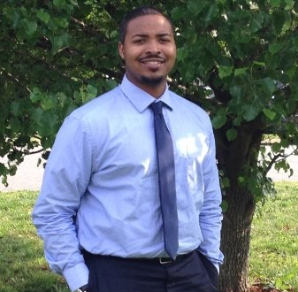

About Me
I am native to Richmond, VA; born and raised. As a high school student, I enjoyed academics, especially mathematics and science. In college I studied BioChemistry, but I have not seen the inside of a lab since. I still have a love for the sciences, but hoping to learn more about computer technology.
Even though I am a bit rusty, I am a musician. My original instrument was the tenor saxophone, but I also learned the frenchhorn, mellophone, trumpet, & euphonium.
I started my career as a mortgage broker, but later went into banking. I am currently a data consultant, but hope to become a developer in 2020!